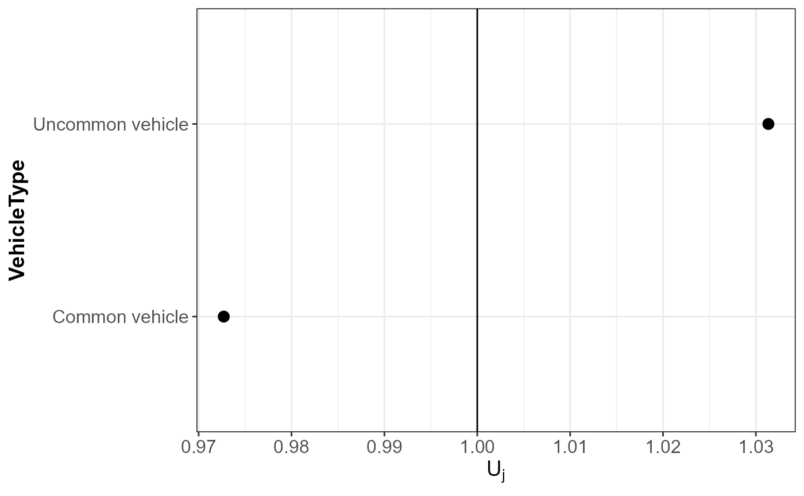
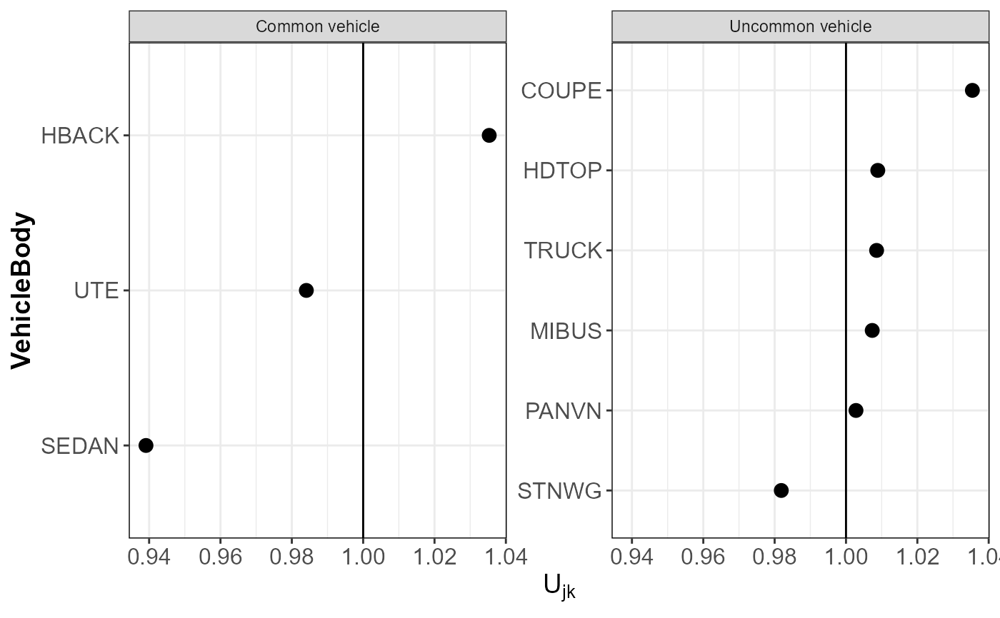

Visualizing the random effect estimates using ggplot2
plotRE.RdUsing this function, you can create plots of the random effect estimates from fitted random effects models. To make
the plots, we rely on the ggplot2 package.
Usage
plotRE(
obj,
levelRE = c("all", "first", "second"),
colour = "black",
plot = TRUE
)Arguments
- obj
an object of type
hierCredibility,hierCredGLMorhierCredTweedie- levelRE
indicates which hierarchical level has to be used.
"all"plots both levels in the hierarchy,"first"the first level in the hierarchy and"second"the second level.- colour
colour for
geom_point- plot
logical indicating if the
ggplotobjects have to be plotted.
Value
a list with ggplot objects.
Examples
# \donttest{
fitHGLM <- hierCredGLM(Y ~ area + gender + (1 | VehicleType / VehicleBody), dataCar, weights = w)
plotRE(fitHGLM)

 #> $ggMLFj
#> $ggMLFj

#>
#> $ggMLFjk

#>
# }